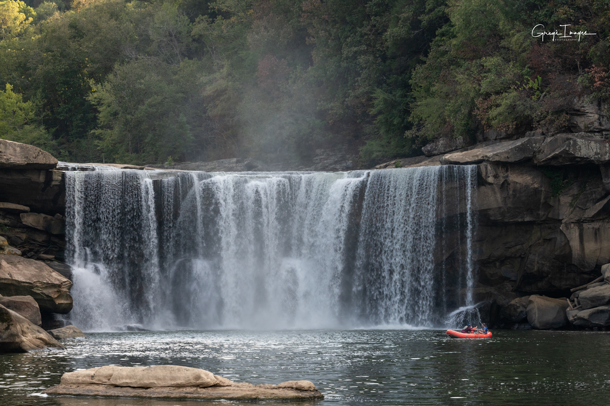
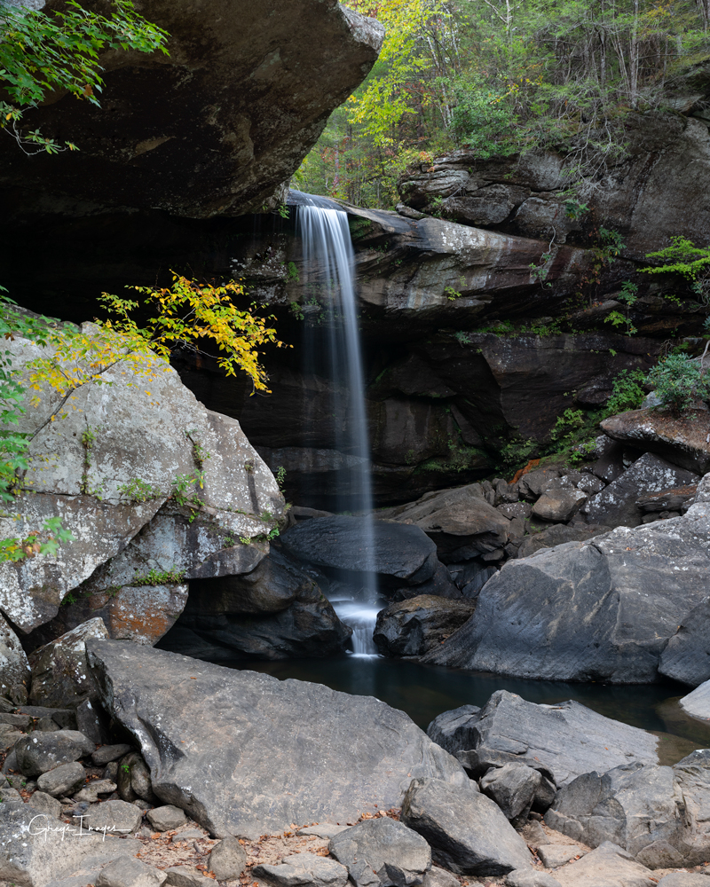
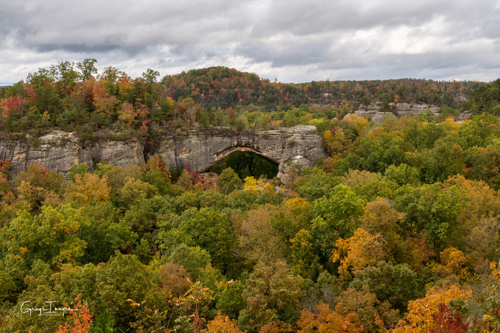
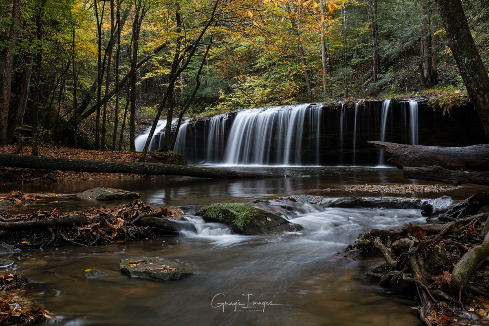

Top Attractions
Crack in the Rocks
A unique rock formation perfect for adventurous hikes and exploration.

Cumberland Falls
Known as the "Niagara of the South," famous for its moonbow phenomenon.
Buzzard Rock
Panoramic views of the forest and valleys, ideal for photography.
Devils Jumps
A thrilling cliffside area for experienced hikers and nature enthusiasts.

Eagle Falls
Hidden waterfall in the forest offering serene nature experiences.

Natural Arch
Iconic geological formation perfect for photography and hiking.

Princess Falls
A picturesque waterfall known for its peaceful surroundings and photo spots.
Find Us
Explore McCreary County and plan your visit using the map below.